Tidsrækker og ARIMA Premium
Gennemgangen af tidsrækkeanalyse bygger meget på praktisk anvendelighed (dvs. vi vil gerne kunne forudsige kursudviklingen), vi vil springe let hen over teorien der kan være tung og er meget omfattende. Nedenstående links giver dog en indføring i den teoretiske del, som vi her ikke berører.
http://ucanalytics.com/blogs/arima-models-manufacturing-case-study-example-part-3/
http://ucanalytics.com/blogs/step-by-step-graphic-guide-to-forecasting-through-arima-modeling-in-r-manufacturing-case-study-example/
Her er en gennemgang af forskellige typer af tidsrækker man kan opleve.
https://people.duke.edu/~rnau/411arim.htm#arima010
Video om ARIMA
https://youtu.be/Aw77aMLj9uM
En tidsrække er observationer, der er observeret over tid, fx. lukkekursen på Novo i 2018, kan vi beskrive som en tidsrække. Hvor vi både registrerer dato og lukkekursen. ARIMA er et avanceret analyseværktøj til at beskrive tidsrækker. Vi vil i de følgende kaptiler, med eksempler beskrive hvordan de enkelte elementer i ARIMA rent praktisk fungerer.
AR står for AutoRegressive
I står for Integrated
MA står for Moving Average
Lad i de følgende afsnit se på nogle simple eksempler for trinvis, at kunne beskrive hvorledes modellen fungerer.
ARIMA(0,0,0) Premium
Nedenfor har vi aktiekurser for 50 dage for en fiktiv aktie, vi vil nu undersøge om disse kan bruges til at forudsige noget om fremtidige aktiekurser. For at gøre dette, skal man enten importere Excelfilen, eller copy paste data fra rammen nedenfor.
Hent ARIMA1.xlsx Excel filen her. Importer ARIMA1.xlsx til R via menuen File - Import Dataset - Excel. Nu skal datasættet rettes til en tidsserie med ts() kommandoen.
Vi kan nu plotte vore data i R.
plot.ts(ARIMA1, xlab='Tid', ylab = 'Kursdata')
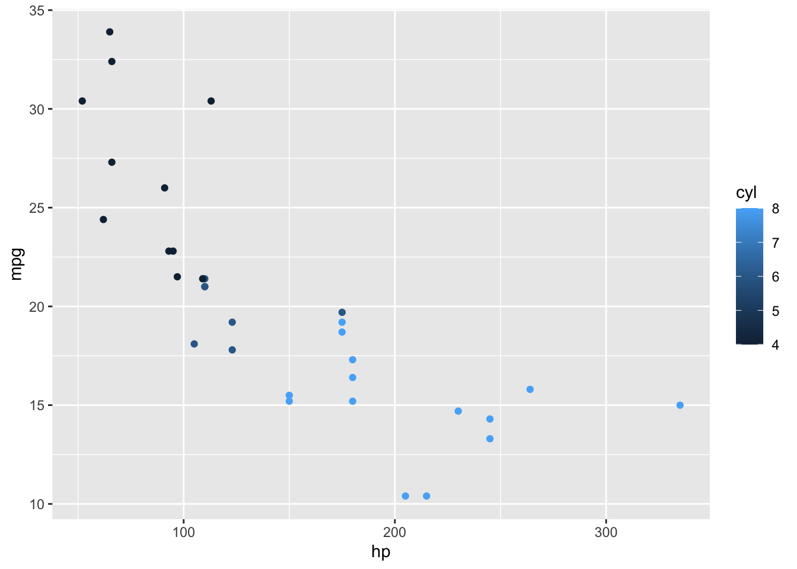
Det er svært at se nogen tydelig udvikling i kursen.
Vi benytter auto.arima til at undersøge om der er en systematik i tidsserien, for at bruge denne funktion skal vi hente og loade pakken forecast med fx. pacman:
Funktionen auto.arima i R er en fantastisk funktion, der automatisk finder den ARIMA model, der passer bedst på observationerne.
## Series: ARIMA1
## ARIMA(0,0,0) with non-zero mean
##
## Coefficients:
## mean
## 19.8964
## s.e. 0.2872
##
## sigma^2 = 4.209: log likelihood = -106.37
## AIC=216.74 AICc=217 BIC=220.57
Output ARIMA(0,0,0) with non-zero mean, fortæller os at data er ligesom hvid støj. Den bedste forudsigelse af aktieprisen, vi kan komme med er gennemsnittet af alle kurserne. Vi kan altså ikke forudsige prisen vha. vore fine værktøjer.
Akaike Information Criterion (AIC) , og Bayesian Information Criterion (BIC) benyttes til at vælge ARIMA modellen med mindst AIC og BIC værdier. auto.arima finder den bedste model automatisk.
Her er ligningen for aktiekursen, den bedste forudsigelse af den fremtidige kurs er den gennemsnitlige kurs der tidligere er observeret.
\[\hat{Y_t}=19.90\]
Variablen \(\hat{Y}_t\), kaldet Y hat t angiver vort
(gæt) på aktiekursen på tidspunkt \(t=1,2,3,...\). Der er således så lidt systematik i Data at her er tale om en ARIMA(0,0,0) model. Vi ser også at der står “ARIMA(0,0,0) with non-zero mean” i output fra R.
ARIMA(1,0,0) eller AR(1) autoregression Premium
En ARIMA(1,0,0) model kan skrives som:
\[\hat{Y_t}=c + \phi Y_{t-1}\]
Vi kan forklare \(\hat{Y_t}\) er værdien for tidsrækken på tidspunkt \(t\), ud fra en konstant \(c\) plus en faktor \(\phi\), der ganges på værdien for tidsrækken på tidspunkt \(t-1\). For at bestemme c skal vi kende tidsrækkens sande middelværdi \(\mu\) og \(\phi\), disse værdier kan R beregne for os. Vi kan så beregne konstanten \(c=(1-\phi)\cdot \mu\). Det betyder så at vi kan estimere fremtidige værdier for tidsrækken.
Vi har nu et eksempel hvor den sande middelværdi for tidsrækken er \(\mu=100\) og \(\phi=0.5\) for en ARIMA(1,0,0) model. Så kan vi beregne konstanten \(c=(1-\phi)\cdot \mu=(1-0.5)\cdot 100=50\). Ligningen for modellen kan så skrives som:
\[\hat{Y_t}=c + \phi Y_{t-1} \Leftrightarrow \hat{Y_t}=50 + 0.5 Y_{t-1}\]
\(\phi\) fortæller, hvis kursen dagen før var 80 gennemsnitskursen er 100, vil kursen imorgen \(t=1\) ifølge modellen være forudsagt som:
\[50+0.5\cdot 80=90\]
Dagen efter \(t=2\) vil kursen så være forudsagt til:
\[50+0.5\cdot 90=95\]
Om 3 dage dvs. \(t=3\) vil kursen så være forudsagt til:
\[50+0.5\cdot 95=97.5\]
Om 4 dage dvs. \(t=4\) vil kursen så være forudsagt til:
\[50+0.5\cdot 97.5=98.75\]
Osv..
Vi siger at forudsagte værdier konvergerer mod (dvs. nærmer sig) \(\mu=100\).
AR i ARIMA, står for autoregression, selv-regression mod middelværdien, i eksemplet så vi hvordan værdien nærmer sig 100, hvis vi forudsiger flere dages kurser kan vi se dette.
\(\phi\) må kun antage værdier mellem og ikke lig med -1 og 1, hvilket betyder den er stationær, altså nærmer sig den sande middelværdi \(\mu\).
Hvad vil der ske hvis \(\mu=100\) og \(\phi=-0.5\) for en ARIMA(1,0,0) model (husk \(c=(1-\phi)\cdot\mu\) når man skal bestemme modellen)?
Hent ARIMA2.xlsx Excel filen her. Importer ARIMA2.xlsx til R via menuen File - Import Dataset - Excel. Nu skal datasættet rettes til en tidsserie med ts() kommandoen.
aaa2 <- auto.arima(ARIMA2)
aaa2
## Series: ARIMA2
## ARIMA(1,0,0) with non-zero mean
##
## Coefficients:
## ar1 mean
## 0.3664 103.2372
## s.e. 0.1301 2.4492
##
## sigma^2 = 128.3: log likelihood = -191.36
## AIC=388.73 AICc=389.25 BIC=394.46
Her afslører auto.arima 1. ordens autoregression dvs.
Modellen kan skrives som.
\[\hat{Y_t}=c + \phi Y_{t-1}\Leftrightarrow \hat{Y_t}=(1-0.3664)\cdot 103.2372 + 0.3664Y_{t-1}\Leftrightarrow \hat{Y_t}=65.4125 + 0.3664Y_{t-1}\]
Vi ser nu igen på vores eksempel med ARIMA2, vi kan nu i R forudsige aktiekursen 12 perioder frem med predict:
predict(auto.arima(ARIMA2), n.ahead = 12)$pred
## Time Series:
## Start = 51
## End = 62
## Frequency = 1
## [1] 105.3673 104.0177 103.5232 103.3420 103.2756 103.2513 103.2424 103.2391
## [9] 103.2379 103.2375 103.2373 103.2373
Spørgsmål ARIMA(1,0,0)
Hent ARIMA22.xlsx Excel filen her. Importer ARIMA22.xlsx til R via menuen File - Import Dataset - Excel. Bestem for den fremtidige aktiekurs 15 perioder frem, udregn direkte fx. vha. Excel og tjek dit resultat i R.
Svar ARIMA(1,0,0)
ARIMA22 <- ts(ARIMA22)
aaa22 <- auto.arima(ARIMA22)
aaa22
## Series: ARIMA22
## ARIMA(1,0,0) with non-zero mean
##
## Coefficients:
## ar1 mean
## 0.2286 215.4871
## s.e. 0.1371 2.3978
##
## sigma^2 = 180.3: log likelihood = -199.82
## AIC=405.63 AICc=406.15 BIC=411.37
predict(auto.arima(ARIMA22), n.ahead = 15)$pred
## Time Series:
## Start = 51
## End = 65
## Frequency = 1
## [1] 216.7592 215.7779 215.5536 215.5023 215.4905 215.4878 215.4872 215.4871
## [9] 215.4871 215.4871 215.4871 215.4871 215.4871 215.4871 215.4871
Spørgsmål ARIMA(1,0,0)
Hent ARIMA23.xlsx Excel filen her. Importer ARIMA23.xlsx til R via menuen File - Import Dataset - Excel. Bestem for den fremtidige aktiekurs 15 perioder frem, udregn direkte fx. vha. Excel og tjek dit resultat i R.
ARIMA(0,1,0) eller I(1) Integrated Premium
Hvis en serie er ikke-stationær (en der ikke nærmer sig en bestemt middelværdi), er den simpleste model en random walk uden drift.
\[\hat{Y_t}-Y_{t-1}=0\Leftrightarrow \hat{Y_t}=Y_{t-1}+0\]
Dette betyder vi bedst kan forudsige Y ved værdien perioden før.
Hvis en serie er ikke-stationær, er det en random walk med drift.
\[\hat{Y_t}-Y_{t-1}=\mu\Leftrightarrow \hat{Y_t}=Y_{t-1}+\mu\]
Dette betyder at Y stiger konstant med \(\mu\) i hver periode. Drift betyder at tidsrækken stiger konstant.
Forestiller man sig en ARIMA(0,1,0) med drift 10 og en kurs på tidspunkt t-1 på 120, vil vi forudsige en kurs på 130 ved tid t og 140 ved tid t+1 osv. Vi kan opskrive modellen som:
\[\hat{Y_t}-Y_{t-1}=10\Leftrightarrow \hat{Y_t}=Y_{t-1}+10\]
Hent ARIMA3.xlsx Excel filen her. Importer ARIMA3.xlsx til R via menuen File - Import Dataset - Excel. Nu skal datasættet rettes til en tidsserie med ts() kommandoen.
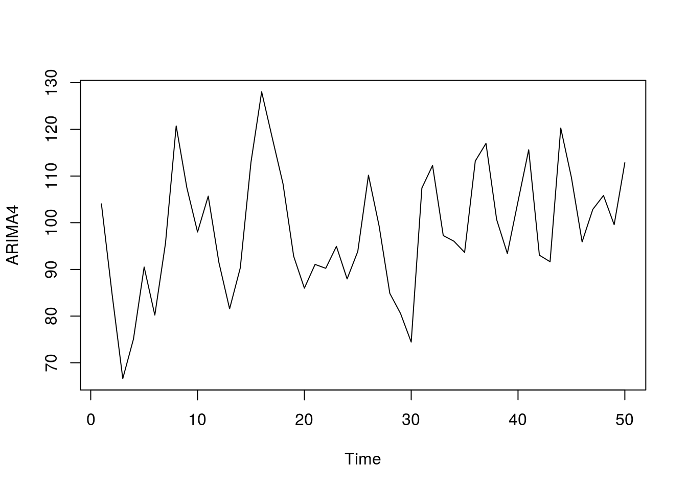
## Series: ARIMA3
## ARIMA(0,1,0) with drift
##
## Coefficients:
## drift
## 7.9149
## s.e. 1.2790
##
## sigma^2 = 83.46: log likelihood = -181.05
## AIC=366.1 AICc=366.36 BIC=369.93
Modellen ovenfor kan skrives som:
\[\hat{Y_t}-Y_{t-1}=\mu\Leftrightarrow \hat{Y_t}-Y_{t-1}=7.9\Leftrightarrow \hat{Y_t}=Y_{t-1}+7.9\]
Vi indsætter drift i stedet for \(\mu\), tolkningen er at modellen forudsiger at aktiekursen stiger med 7.9 fra periode til periode.
Hvis vi har en ren random walk model uden drift dvs. med \(\mu=0\) ARIMA(0,1,0) for en aktiekurs , forventer vi at kursen til tid t vil være den samme som til tid t-1. Denne kan skrives som:
\[\hat{Y_t}-Y_{t-1}=0\]
ARIMA(0,0,1) eller MA(1) Moving average Premium
Vi kan i stedet for at bruge tidligere aktiekurser til at forudsige aktiekursen i stedet benytte tidligere målefejl
til at forudsige kursen.
Modellen kan skrives som:
\[\hat{Y_t}=\mu+\theta_1 e_{t-1}\]
Hvis vi forestiller os \(\mu=50\) \(\theta_1=0.5\) kursen til tid t-1 var 120 forudsigelsen til tid t-1 var 100, så målefejlen
til tid t-1 er \(e_{t-1}\) er faktisk kurs minus forudsagt kurs altså 120-100=20. Nu kan vi forudsige kursen til tid t som:
\[\hat{Y_t}=\mu+\theta_1 e_{t-1}\Leftrightarrow \hat{Y_t}=50+0.5\cdot20=60\]
Hent ARIMA4.xlsx Excel filen her. Importer ARIMA4.xlsx til R via menuen File - Import Dataset - Excel. Nu skal datasættet rettes til en tidsserie med ts() kommandoen.
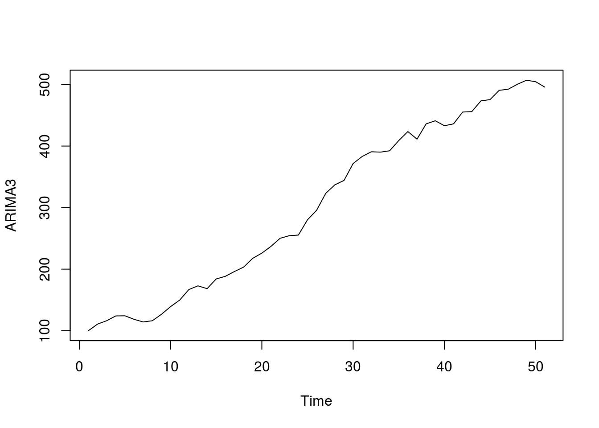
## Series: ARIMA4
## ARIMA(0,0,1) with non-zero mean
##
## Coefficients:
## ma1 mean
## 0.9053 99.0176
## s.e. 0.0664 2.5588
##
## sigma^2 = 95.68: log likelihood = -184.81
## AIC=375.62 AICc=376.14 BIC=381.35
Vi kan nu forudsige aktiekursen 12 perioder frem med predict:
predict(auto.arima(ARIMA4), n.ahead = 12)$pred
## Time Series:
## Start = 51
## End = 62
## Frequency = 1
## [1] 113.64960 99.01756 99.01756 99.01756 99.01756 99.01756 99.01756
## [8] 99.01756 99.01756 99.01756 99.01756 99.01756
Hvorfor svarer den forudsagte værdi til mean i en ren ARIMA(0,0,1) eller MA(1) model? (Vink hvad er definitionen på en
)
Plots med forskellige modeller Premium

## Series: ap1
## ARIMA(1,0,0) with non-zero mean
##
## Coefficients:
## ar1 mean
## 0.7896 107.0565
## s.e. 0.0887 6.6056
##
## sigma^2 = 115.6: log likelihood = -192.96
## AIC=391.91 AICc=392.42 BIC=397.71
Kursen svinger omkring middelværdien.
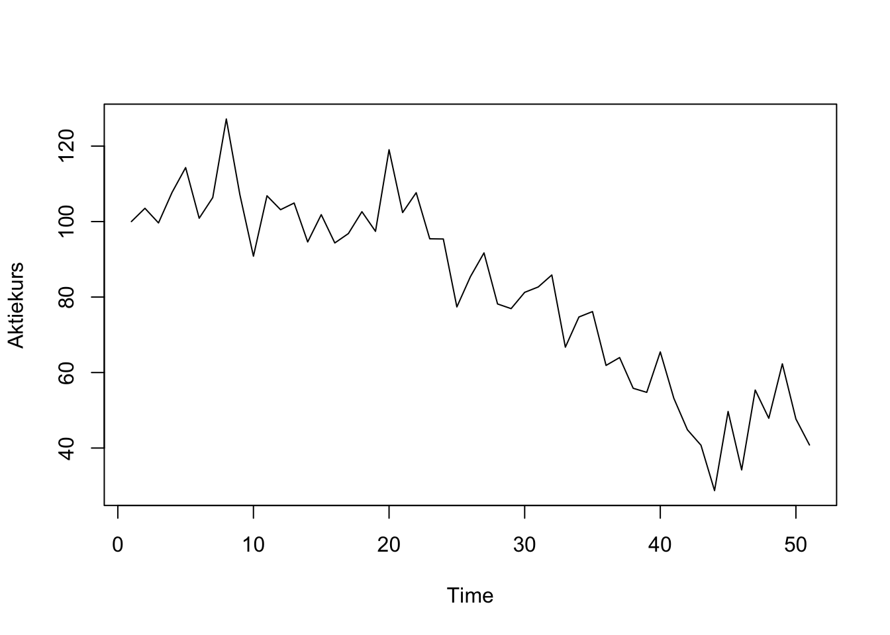
## Series: ap2
## ARIMA(2,1,1)
##
## Coefficients:
## ar1 ar2 ma1
## 1.6366 -0.7934 -0.9339
## s.e. 0.0928 0.0930 0.0731
##
## sigma^2 = 119.2: log likelihood = -190.02
## AIC=388.03 AICc=388.92 BIC=395.68
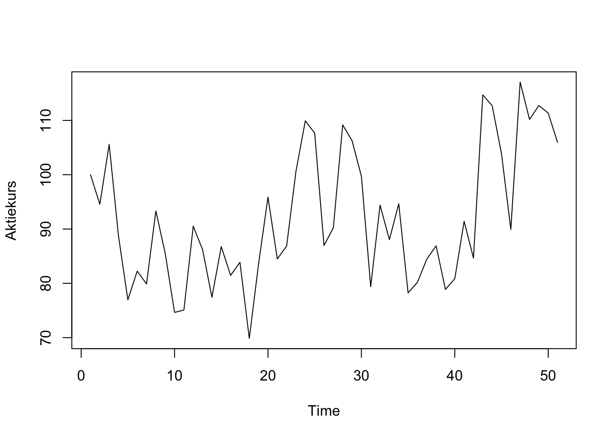
## Series: ap3
## ARIMA(2,0,2) with non-zero mean
##
## Coefficients:
## ar1 ar2 ma1 ma2 mean
## -0.5462 -0.0166 1.0197 0.1447 101.0450
## s.e. 0.9482 0.3710 0.9451 0.7894 1.0228
##
## sigma^2 = 112.1: log likelihood = -753.49
## AIC=1518.99 AICc=1519.42 BIC=1538.78
Vi kan også grafisk vise hvordan kursen vil udvikle sig med 80% og 95% konfidensbælter.
forecast(auto.arima(ap3))
## Point Forecast Lo 80 Hi 80 Lo 95 Hi 95
## 201 102.8570 89.28718 116.4267 82.10377 123.6101
## 202 100.2281 85.21433 115.2419 77.26653 123.1897
## 203 101.4611 86.34325 116.5790 78.34032 124.5820
## 204 100.8312 85.68880 115.9736 77.67290 123.9895
## 205 101.1548 86.00604 116.3037 77.98674 124.3230
## 206 100.9885 85.83800 116.1390 77.81780 124.1592
## 207 101.0740 85.92305 116.2250 77.90262 124.2454
## 208 101.0301 85.87898 116.1811 77.85849 124.2016
## 209 101.0526 85.90154 116.2037 77.88103 124.2243
## 210 101.0410 85.88992 116.1921 77.86941 124.2127
plot(forecast(auto.arima(ap3)))
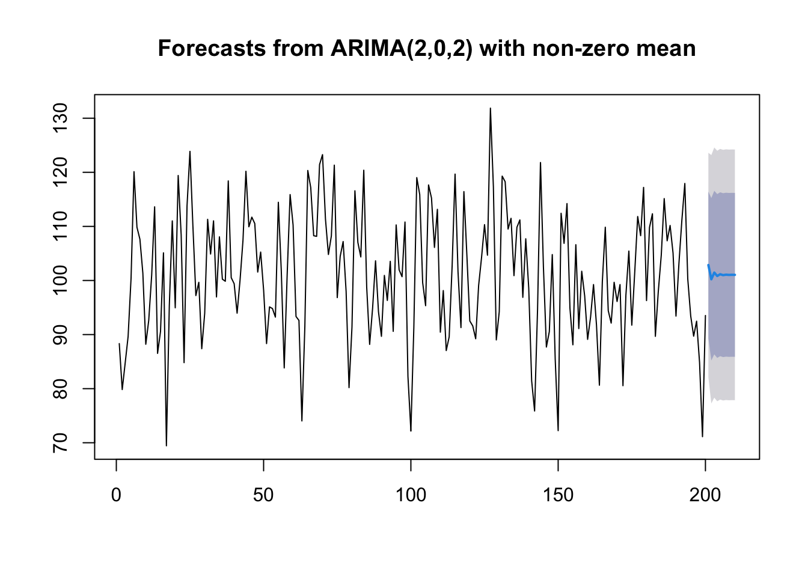
ARIMA af højere orden Premium
Arima modeller kan afhænge af flere tidligere perioder, fx kan ligningen for ARIMA(2,0,0) eller AR(2), opskrives som:
\[\hat{Y_t}=c + \phi Y_{t-1}+ \phi_2 Y_{t-2}\]
Modellen afhænger altså af 2 tidligere perioder (lags) og ikke en. Man betegner dette som en model med lag 2.
Arima modeller kan indeholde flere forskellige elementer med lag som fx. ARIMA(0,2,1).
ARIMA og sæsonalitet Premium
Hvis fx. en aktie handles lavere om fredagen kan ARIMA modellerne korrigere for dette ved sæsonkorrektion. I sæsonkorrigerede modeller vises dette som en ekstra vektor med 3 tal for hhv. sæsonkorrigeret AR eller SAR, sæsonkorrigeret I eller SI og sæsonkorrigeret MA eller SMA. En model som ARIMA(1,0,0)(1,0,0) har altså udover AR også en sæsonkomponent.
ARIMA eksempler Premium
Traktorer Premium
Hent følgende data for traktor salg, med følgende kommandoer i R.
data = read.csv('http://ucanalytics.com/blogs/wp-content/uploads/2015/06/Tractor-Sales.csv')
data = ts(data[,2],start = c(2003,1),frequency = 12)
Vi ser salget er voksende over tid, der er ligeledes en sæsonkomponent.
plot(data, xlab='Years', ylab = 'Tractor Sales')
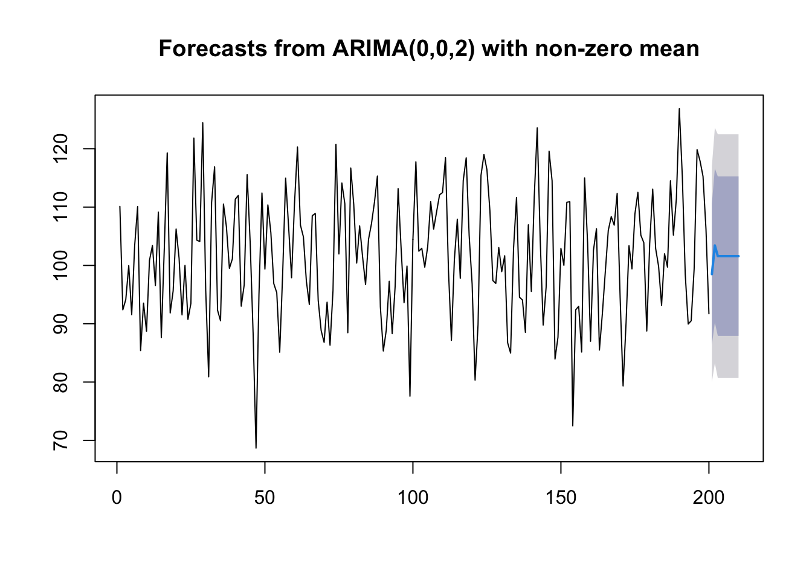
Differens tranformer data for at generere stationære data mht. middel (fjern trend)
plot(diff(data),ylab='Differenced Tractor Sales')
log transformer data for at sikre stationaritet mht. varians.
plot(log10(data),ylab='Log (Tractor Sales)')

Eventuel Differens og log transformation af data for at sikre stationaritet både mht. middel og varians.
plot(diff(log10(data)),ylab='Differenced Log (Tractor Sales)')

Find bedste model med auto.arima, når der er stationaritet.
Akaike Information Criterion (AIC) , og Bayesian Information Criterion (BIC), vælg ARIMA modellen med mindst AIC and BIC værdier. auto.arima finder den bedste model automatisk.
require(forecast)
ARIMAfit = auto.arima(log10(data), approximation=FALSE,trace=FALSE)
ARIMAfit
## Series: log10(data)
## ARIMA(0,1,1)(0,1,1)[12]
##
## Coefficients:
## ma1 sma1
## -0.4047 -0.5529
## s.e. 0.0885 0.0734
##
## sigma^2 = 0.0002571: log likelihood = 354.4
## AIC=-702.79 AICc=-702.6 BIC=-694.17
Nu kan vi forudsige kommende traktor salg med modellen
par(mfrow = c(1,1))
pred = predict(ARIMAfit, n.ahead = 36)
salg <- 10^pred$pred
salg
## Jan Feb Mar Apr May Jun Jul
## 2015 567.7645 566.4765 670.8226 758.9138 855.9482 817.2827 938.7239
## 2016 625.2464 623.8280 738.7384 835.7481 942.6065 900.0265 1033.7626
## 2017 688.5479 686.9859 813.5300 920.3613 1038.0383 991.1474 1138.4233
## Aug Sep Oct Nov Dec
## 2015 934.5120 703.5005 626.9879 571.9988 668.5363
## 2016 1029.1243 774.7246 690.4657 629.9094 736.2206
## 2017 1133.3154 853.1596 760.3701 693.6830 810.7573
plot(data,type='l',xlim=c(2003,2018),ylim=c(1,1600),xlab = 'Year',ylab = 'Tractor Salg')
lines(10^(pred$pred),col='blue')
lines(10^(pred$pred+2*pred$se),col='orange')
lines(10^(pred$pred-2*pred$se),col='orange')
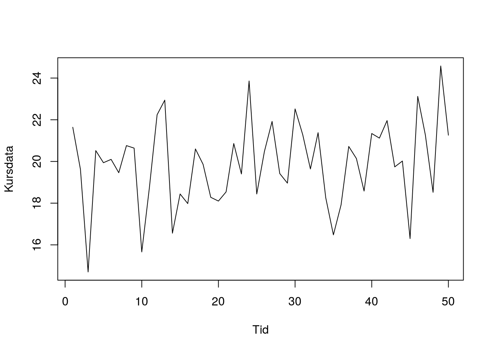
Detail debet card forbrug på Island (millioner ISK). Premium
#Hent fpp pakken og load den
plot(debitcards)
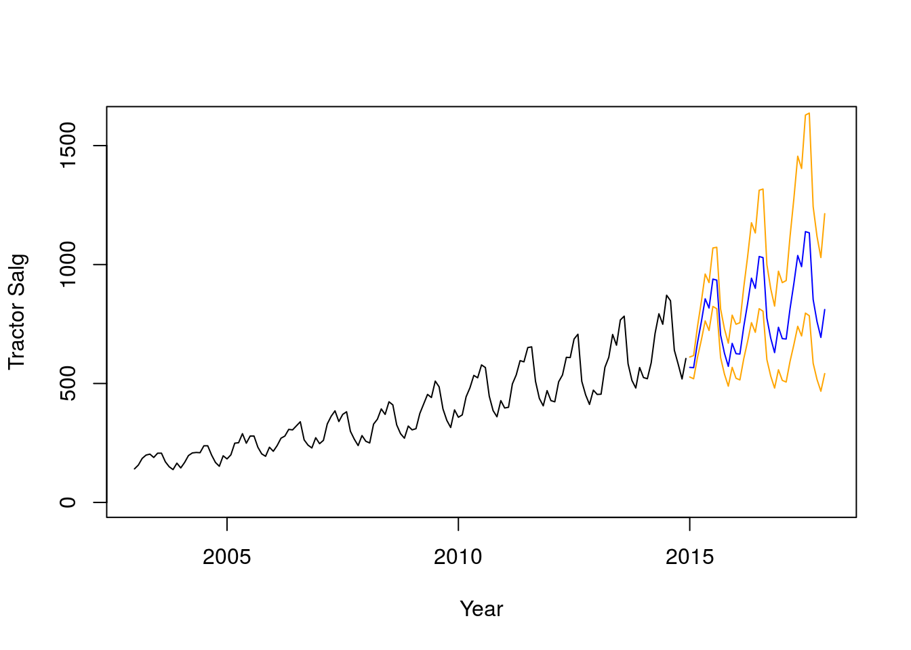
dldebitcards <- diff(log10(debitcards))
plot(dldebitcards,ylab="Differenced Log (debitcards)")

require(forecast)
ARIMAfit = auto.arima(log10(debitcards), approximation=FALSE,trace=FALSE)
ARIMAfit
## Series: log10(debitcards)
## ARIMA(2,1,0)(0,1,1)[12]
##
## Coefficients:
## ar1 ar2 sma1
## -0.7167 -0.4372 -0.8352
## s.e. 0.0761 0.0763 0.1085
##
## sigma^2 = 0.0004402: log likelihood = 343.95
## AIC=-679.9 AICc=-679.61 BIC=-668.05
Nu kan vi forudsige kommende debetkort omsætning med modellen
par(mfrow = c(1,1))
pred = predict(ARIMAfit, n.ahead = 36)
plot(debitcards,type='l',xlim=c(2000,2016),ylim=c(1,40000),xlab = 'Year',ylab = 'Debetcard usage')
lines(10^(pred$pred),col='blue')
lines(10^(pred$pred+2*pred$se),col='orange')
lines(10^(pred$pred-2*pred$se),col='orange')
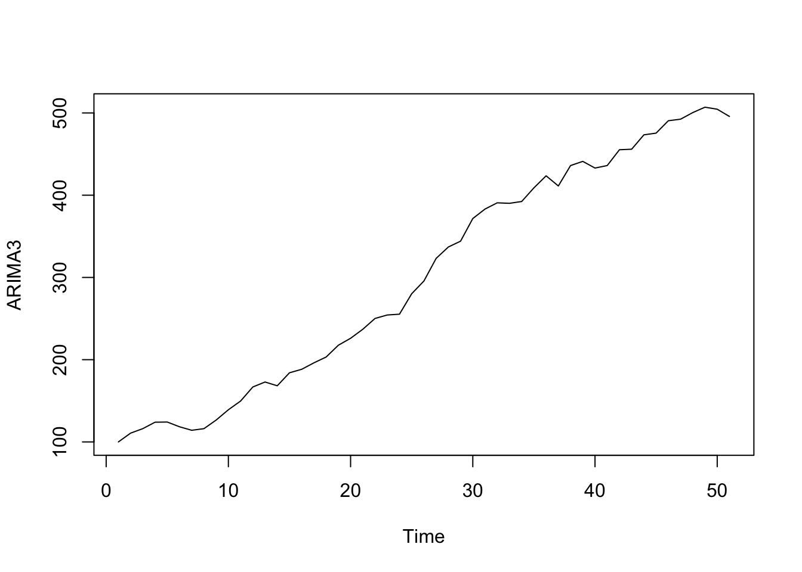
Forudsagt brug af debetkort bliver:
## Jan Feb Mar Apr May Jun Jul Aug
## 2013 19717.77 19162.87 20436.29 20506.84 23262.14 23545.62 24292.86 25544.16
## 2014 20701.39 20352.57 21886.85 21721.53 24745.18 25091.09 25806.49 27175.65
## 2015 22017.60 21649.95 23281.85 23104.56 26321.98 26689.74 27450.29 28907.08
## Sep Oct Nov Dec
## 2013 22267.47 22543.80 22081.63 29090.93
## 2014 23697.15 23970.40 23490.36 30947.83
## 2015 25206.87 25497.43 24986.92 32919.46
Forecast Aktiekurser Premium
Man kan hente online aktiekurser med quantmod pakken installer denne med fx. pacman, vi skal også bruge pakken forecast som vi ligeledes henter. Vi henter nedenfor Google justeret lukkekurs til dato det er 6 søjle i GOOG matricen nedenfor. Vi kan se forecaste aktiekursen vha.
pacman::p_load(quantmod, forecast)
getSymbols("GOOG",from = "2017-01-01", to = Sys.Date(),getSymbols.warning4.0=FALSE)
## [1] "GOOG"
plot(GOOG[,6],main = "Google adj. close")
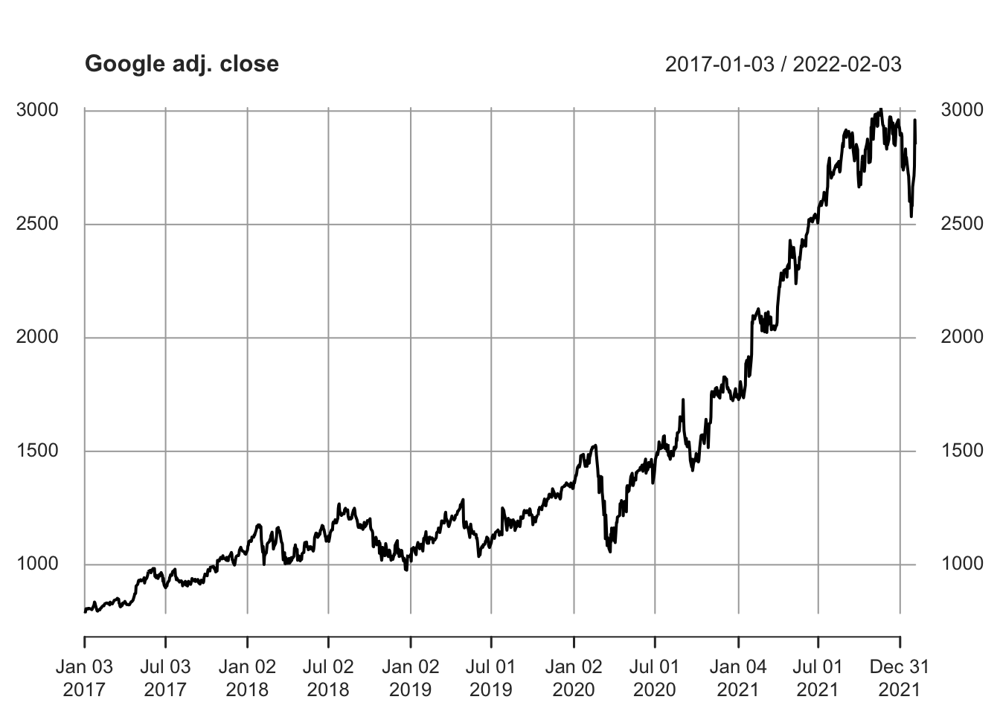
agoog <- auto.arima(GOOG[,6])
agoog
## Series: GOOG[, 6]
## ARIMA(0,1,2) with drift
##
## Coefficients:
## ma1 ma2 drift
## -0.0590 0.0592 1.6996
## s.e. 0.0285 0.0293 0.7299
##
## sigma^2 = 683.3: log likelihood = -5991.94
## AIC=11991.89 AICc=11991.92 BIC=12012.51
fagoog <- forecast(agoog)
fagoog
## Point Forecast Lo 80 Hi 80 Lo 95 Hi 95
## 1282 2952.958 2919.460 2986.457 2901.726 3004.190
## 1283 2966.549 2920.551 3012.546 2896.201 3036.896
## 1284 2968.248 2911.342 3025.155 2881.217 3055.279
## 1285 2969.948 2903.910 3035.985 2868.952 3070.943
## 1286 2971.647 2897.596 3045.698 2858.396 3084.899
## 1287 2973.347 2892.069 3054.625 2849.043 3097.651
## 1288 2975.047 2887.133 3062.960 2840.595 3109.498
## 1289 2976.746 2882.665 3070.828 2832.861 3120.631
## 1290 2978.446 2878.576 3078.315 2825.709 3131.183
## 1291 2980.145 2874.805 3085.485 2819.042 3141.249
plot(fagoog,main = "Google adj. close")
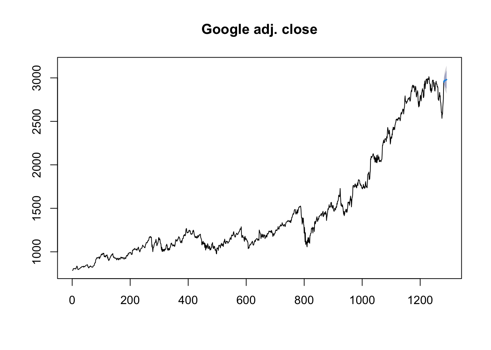
Eksporter Aktiekurser til Excel Premium
Man kan eksportere data til fx Excel med pakken rio, herunder dannes en Excel fil med to ark med hhv. aktiedata og forudsigelser. Funktionen export(), benyttes, man angiver data til de enkelte ark en list() funktion, sidste argument er selve filnavnet. Filen gemmes i arbejdsbiblioteket. Herfra kan den kopieres eller exporteres.
#Hent rio med install.packages("rio")
#Load rio med library("rio") eller benyt pacman
# pacman::p_load(quantmod, forecast, rio)
# # getSymbols("GOOG",from = "2017-01-01", to = Sys.Date(),getSymbols.warning4.0=FALSE)
# agoog <- auto.arima(GOOG[,6])
# fagoog <- forecast(agoog)
# export(list(GOOG,fagoog),overwrite=TRUE,"google.xlsx") #Skriver filen google.xlsx til arbejdsbiblioteket.
getSymbols("GS",from = "2017-01-01", to = Sys.Date(),getSymbols.warning4.0=FALSE)
## [1] "GS"
plot(GS[,6],main = "Goldman Sachs adj. close")
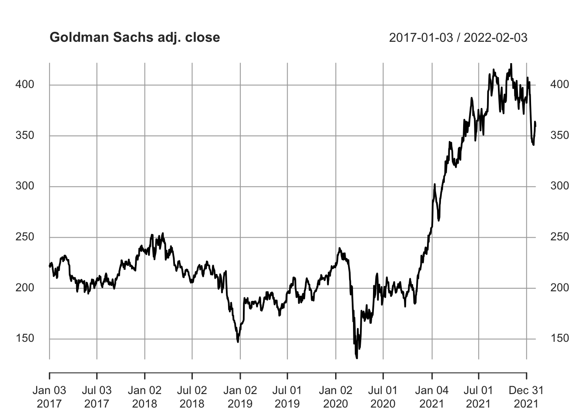
ags <- auto.arima(GS[,6])
ags
## Series: GS[, 6]
## ARIMA(2,1,3)
##
## Coefficients:
## ar1 ar2 ma1 ma2 ma3
## 0.5623 -0.8135 -0.5789 0.8882 -0.0627
## s.e. 0.1040 0.1686 0.1060 0.1400 0.0334
##
## sigma^2 = 19.16: log likelihood = -3703.57
## AIC=7419.15 AICc=7419.21 BIC=7450.08
fags <- forecast(ags)
fags
## Point Forecast Lo 80 Hi 80 Lo 95 Hi 95
## 1282 363.0580 357.4485 368.6675 354.4790 371.6370
## 1283 362.5694 354.7018 370.4370 350.5369 374.6019
## 1284 362.3473 352.5230 372.1717 347.3223 377.3724
## 1285 362.6200 351.2041 374.0358 345.1609 380.0790
## 1286 362.9539 350.2925 375.6154 343.5899 382.3179
## 1287 362.9199 349.1773 376.6626 341.9024 383.9375
## 1288 362.6291 347.8108 377.4475 339.9665 385.2918
## 1289 362.4933 346.5935 378.3931 338.1767 386.8099
## 1290 362.6534 345.7543 379.5526 336.8084 388.4985
## 1291 362.8540 345.0749 380.6331 335.6632 390.0448
plot(fags,main = "Goldman Sachs adj. close")
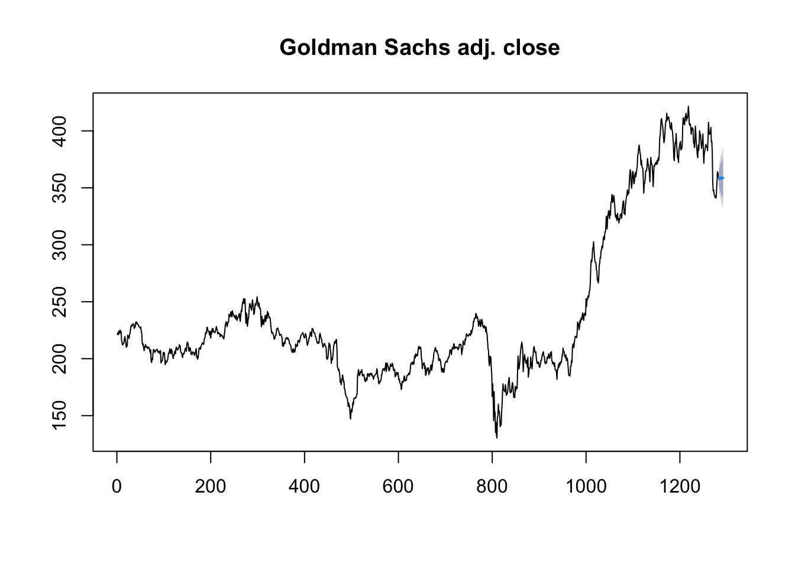
getSymbols("DANSKE.CO",from = "2017-01-01", to = Sys.Date(),getSymbols.warning4.0=FALSE)
## [1] "DANSKE.CO"
plot(DANSKE.CO[,6],main = "Danske Bank adj. close")
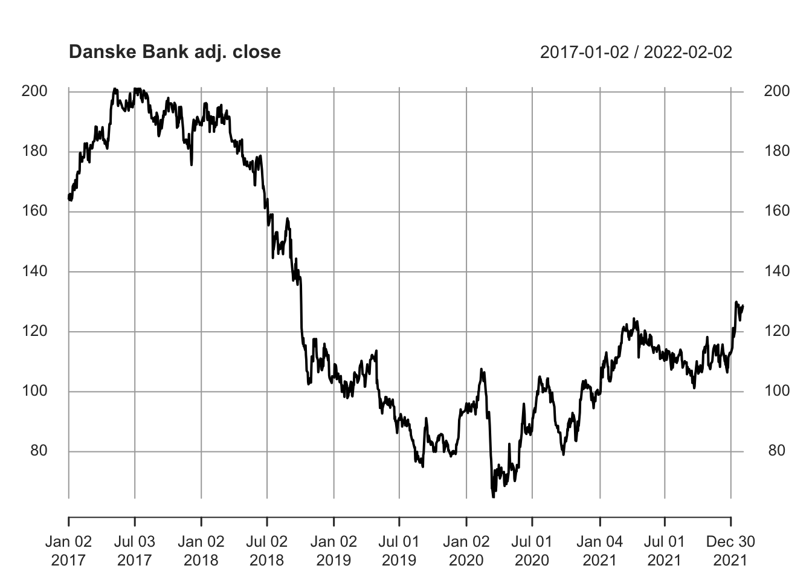
addb <- auto.arima(DANSKE.CO[,6])
addb
## Series: DANSKE.CO[, 6]
## ARIMA(2,1,2)
##
## Coefficients:
## ar1 ar2 ma1 ma2
## -1.1369 -0.7980 1.0934 0.7917
## s.e. 0.3385 0.0996 0.3169 0.1046
##
## sigma^2 = 4.356: log likelihood = -2734.52
## AIC=5479.04 AICc=5479.09 BIC=5504.78
faddb <- forecast(addb)
faddb
## Point Forecast Lo 80 Hi 80 Lo 95 Hi 95
## 1272 128.7434 126.0687 131.4182 124.6527 132.8342
## 1273 128.7248 125.0234 132.4261 123.0640 134.3855
## 1274 128.7113 124.1451 133.2775 121.7279 135.6947
## 1275 128.7415 123.4693 134.0137 120.6784 136.8046
## 1276 128.7179 122.8452 134.5906 119.7364 137.6995
## 1277 128.7207 122.2683 135.1730 118.8526 138.5887
## 1278 128.7364 121.7747 135.6981 118.0894 139.3834
## 1279 128.7163 121.2806 136.1521 117.3443 140.0883
## 1280 128.7266 120.8290 136.6242 116.6483 140.8049
## 1281 128.7309 120.4142 137.0477 116.0116 141.4503
plot(faddb,main = "Danske Bank adj. close")
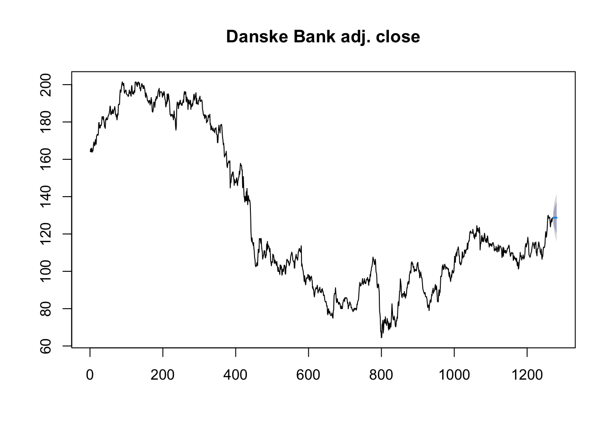
getSymbols("BRK-A",from = "2000-01-01", to = Sys.Date(),getSymbols.warning4.0=FALSE)
## [1] "BRK-A"
plot(`BRK-A`[,6],main = "Berkshire adj. close")
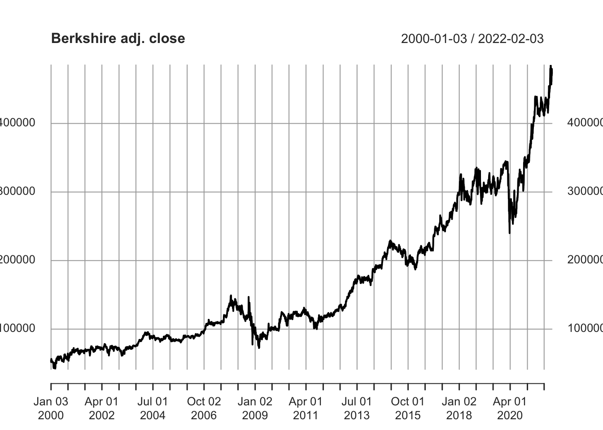
aberkshire <- auto.arima(`BRK-A`[,6])
aberkshire
## Series: `BRK-A`[, 6]
## ARIMA(1,2,0)
##
## Coefficients:
## ar1
## -0.5628
## s.e. 0.0111
##
## sigma^2 = 8291464: log likelihood = -52138.9
## AIC=104281.8 AICc=104281.8 BIC=104295
faberkshire <- forecast(aberkshire)
faberkshire
## Point Forecast Lo 80 Hi 80 Lo 95 Hi 95
## 5559 483911.9 480221.7 487602.1 478268.2 489555.6
## 5560 490521.0 484059.9 496982.2 480639.6 500402.5
## 5561 495893.6 485543.4 506243.8 480064.3 511722.9
## 5562 501962.1 487423.3 516500.8 479726.9 524197.2
## 5563 507638.9 488331.1 526946.6 478110.2 537167.5
## 5564 513536.1 489091.8 537980.4 476151.8 550920.4
## 5565 519309.3 489307.7 549310.9 473425.8 565192.8
## 5566 525152.3 489243.3 561061.3 470234.2 580070.4
## 5567 530956.0 488787.6 573124.4 466465.1 595447.0
## 5568 536781.8 488032.5 585531.1 462226.2 611337.5
plot(faberkshire,main = "Berkshire adj. close")
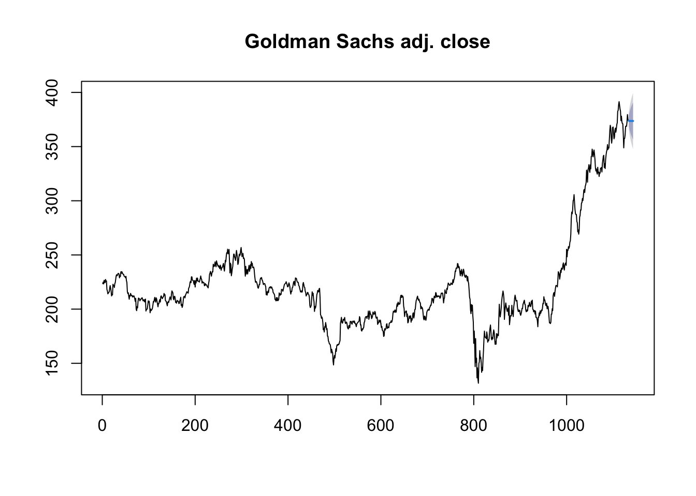
Aktieafkast Premium
I Quantmod pakken ligger også mulighed for at beregne fx. dagligt, ugentligt afkast, dette gør vi vha. funktionen “periodReturn.”
getSymbols("AAPL",src='yahoo')
## [1] "AAPL"
apple <- periodReturn(`AAPL`,period='yearly',subset='2003::') # Årligt Afkast 2003 til i dag
plot(apple, main = "Apple årligt afkast siden 2007")
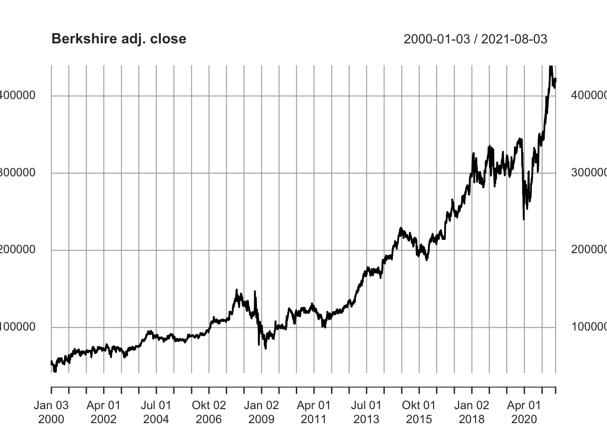
## Series: apple
## ARIMA(1,0,0) with non-zero mean
##
## Coefficients:
## ar1 mean
## -0.4963 0.3746
## s.e. 0.2384 0.0766
##
## sigma^2 = 0.2294: log likelihood = -10
## AIC=26 AICc=28 BIC=28.32
getSymbols("BRK-A",src='yahoo')
## [1] "BRK-A"
berkshire <- periodReturn(`BRK-A`,period='yearly',subset='2003::')
plot(berkshire, main = "Berkshire årligt afkast siden 2007")
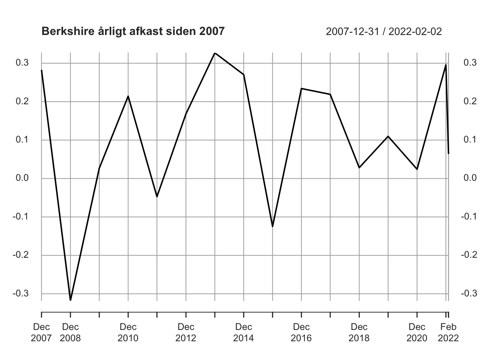
## Series: berkshire
## ARIMA(0,0,0) with non-zero mean
##
## Coefficients:
## mean
## 0.1109
## s.e. 0.0426
##
## sigma^2 = 0.03097: log likelihood = 5.61
## AIC=-7.22 AICc=-6.3 BIC=-5.68